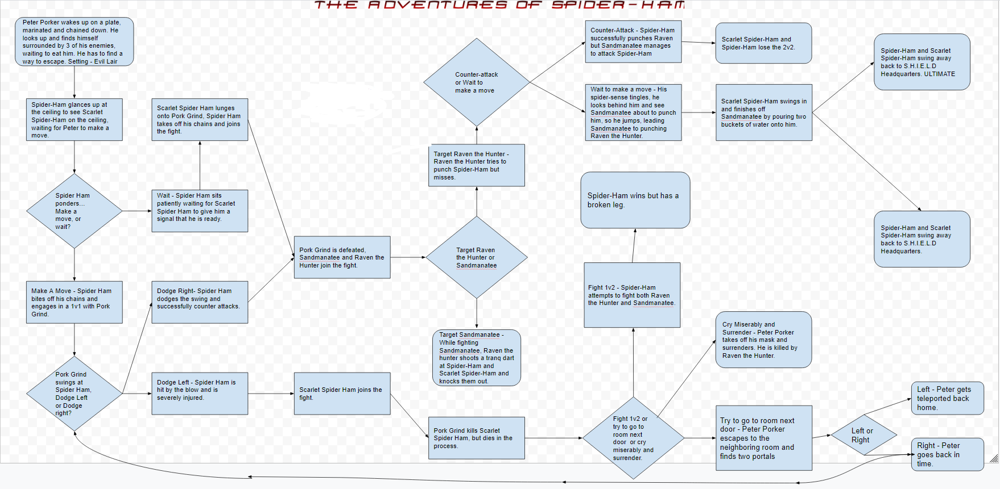

The main objective of our game is to dodge all the incoming fireballs coming from random directions. The player gains one point for every second they are alive. The player can choose three modes in the main menu: Ease, Medium, and Hard. In easy, you have 5 lives, in medium, you have 3 lives, and in hard, you have only 1 life.
So my first intention was to make a pokemon game, but that seemed a bit too awkward with what we had to work with at the moment, so I changed it to a fireball dodging game using Ash's character. I think the randomizer was pretty successfull and also the fireballs. We had a lot of trouble with the randomizer since we couldn't get the fireballs to appear correctly but we finally got the operators to work. If we had more time, we would fix the bugs and make graphical adjustments.


Spider-Ham wakes up in an evil lair and is trapped by the villains. He and Scarlet Spider-Ham must find a way to defeat the villains and escape the evil lair. They must make the right decisions or else they will not be successful. Some endings would be one where they escape or one where Scarlet Spider-Ham dies, but Spider-Ham is able to save Scarlet Spider-Ham if he goes through the correct portal in order to go back in time to rescue Scarlet Spider-Ham.
To start off with our story, we imported everything we needed, like sleep and sys. Then we defined "typing" so that we can make the text basically "type" out the sentences, and we did this by adding sys.stdout.flush() and sleep(timeDelay) when defining "typing". We started the story by introducing the charaters, the setting, and the first set of decisions for the user. Afterwards, we built onto those decisions to make even more decisions until that pathway was complete. As we were filling in those decisions, I noticed that the text was going out of the terminal box, so I had to fix this by adding a note in the beginning telling the user to press the clear button on the top right corner of the terminal to clear the text in order to fix this problem. Then I finished typing until the end where we were supposed to make a scene where Spider-Ham goes back in time. We tried to use the same scenes from before but it wouldn't work because we wanted the story to have a different ending after the time travel scene, so I remade the same scenes but renamed it to ensure that at the end, the user will end with a different ending.
Organizing our scenes for our story into separate functions is a form of procedural abstraction because the functions are basically procedures, and when we call them, it will type out the scene whenever we need it to. Some advantages of organizing our scenes are that we are able to know which scene is which and also we are able to put all the scenes in order easily instead of having to type out the whole thing and accidently misplacing a scene when we could just make it a function and move it quickly.
I liked the story where the main character was trapped and a knight came to "save" her. I enjoyed it because it was intriguing and was kind of ironic that the knight didn't really do anything useful. A common problem I noticed with all of the stories was that if you type all of the choices, it stops the program.